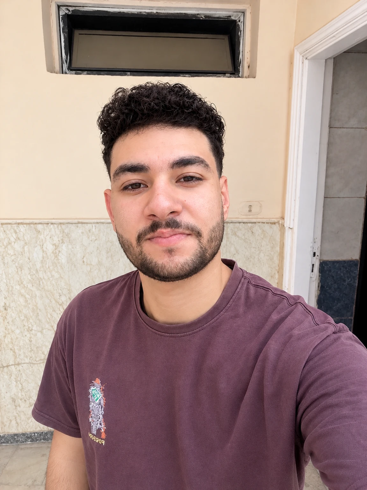
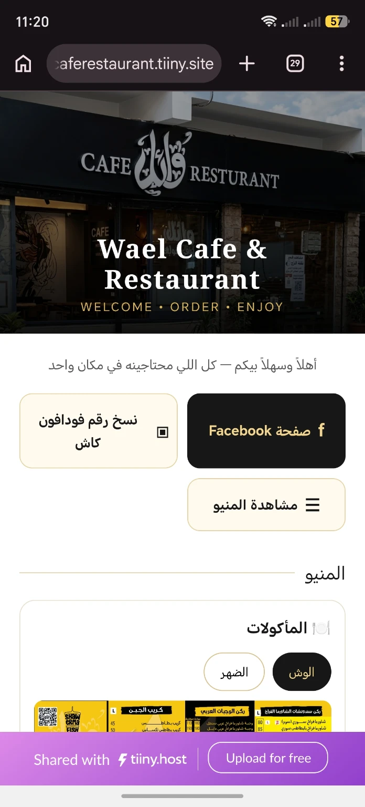

⌘
IT Support
Windows installation, computer troubleshooting, software and driver setup, basic networking, router configuration, and Linux fundamentals.
Hello, I'm
I build useful digital experiences, create visual content, and help people solve everyday technology problems.

Educational Technology Student
I'm a student at Menoufia University, Faculty of Specific Education, Department of Educational Technology and Information. I enjoy combining technology and creativity — from troubleshooting computers to building websites and creating social media content.
EducationMenoufia University
DepartmentEducational Technology & Information
EnglishArmed Forces Language Institute · Level 18 / 23
Windows installation, computer troubleshooting, software and driver setup, basic networking, router configuration, and Linux fundamentals.
Creating digital visuals and social media content using design and video-editing tools.
Managing Facebook and Instagram pages, preparing content, and setting up paid advertising campaigns.
Building web pages and practical website features from scratch.
Also comfortable with Microsoft Word and PowerPoint.
Personal projects and practical experience. Replace the sample visuals with screenshots of your actual work.

WAEL CAFE & RESTAURANT · WEBSITEDesigned and built the Wael Cafe & Restaurant website from scratch, featuring a digital menu and customer links. Also programmed NFC tags so a phone tap opens the intended online page, including the Instagram page.
NFC demonstration: tap the tag to open the linked page.Created and published visual content for a fashion brand account, preparing promotional posts and product-focused creatives for social media.
Informal hands-on help for individuals with Windows installation, device troubleshooting, software setup, and basic network issues.
Managed Facebook and Instagram pages, published promotional content, and ran paid advertising campaigns for products and seasonal offers.
I'm open to entry-level opportunities, internships, and project collaborations.